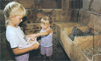

Eggstravaganza: A 4-Part Series On Raising Chickens For Eggs
This four-part special section tells you how to raise backyard chickens, build a portable mini-coop, and enjoy delicious eggs and exceptional pest control from rare, beautiful heritage breeds.
By Cheryl Long
February/March 2003
The minute you crack open a homegrown egg from a hen that's been able to eat grass and seeds and bugs, you'll never settle for pale, tasteless factory-farm eggs again. Homegrown eggs are more colorful and flavorful, and they're more nutritious: richer in beta-carotene, vitamin E, folic acid and vitamin B-12. Contrary to conventional thinking, a recent major study found that eating eggs was not associated with an increased risk of heart disease. In the sample of 118,000 people, those who ate five to six eggs per week actually had a lower risk of heart disease than those who ate less than one egg per week.
And when you're in charge of your own chickens, you can be assured that the eggs you raise are free of synthetic hormones and other controversial drugs often used to produce commercial eggs.
Backyard Breeds
The best chicken breeds for backyard egg production are elegant heritage breeds, which are threatened with extinction as commercial egg producers rely entirely on only a few intensely bred strains. You can do your part in preserving these endangered breeds and enjoy farm-fresh eggs, even if you have just a small yard. These traditional egg-laying specialists are smaller than dual-purpose (meat and eggs) breeds, and they have retained their natural instinct for foraging, making them well-suited for our portable mini-coop. See also: Incredible Homestead Chickens
Mother Earth's Mini-coop Plan
Chickens are every bit as entertaining to watch and easy to keep as dogs or cats. Our mini-coop keeps the birds safe and allows you to easily move their pen around so they can feed throughout your yard and garden. And if your yard is fenced or your neighbors don't mind, you can let your hens roam outside the coop during the day, and they will naturally return to the coop to roost every evening. You also can train them to return to the coop during the day by putting grain or their favorite food scraps in the coop. See also: Coops & Cages
City Chicken Laws
Even city dwellers can keep a few hens as easily as they keep dogs or cats. We surveyed 20 cities across the country and found that most allowed chickens. If you live in a city that currently prohibits your feathered friends, we're betting you could get the law changed if you tried. (As our City Laws chart shows, all four cities that prohibit chickens allow dogs, sometimes unlimited numbers of dogs. But a few hens are no more potential bother to neighbors than dogs. So if dogs are allowed, why not chickens?)
Poultry Pest Patrol
In addition to providing delicious and nutritious eggs, Mother Earth News readers report, a few hens can control grasshoppers and many other garden pests, fleas, flies, fire ants, ticks, termites, lawn grubs, and even mice and rats.
And now you're ready for How to Raise Chickens!
Eggs-pert Input: Thanks to poultry scientist Robert Hawes, University of Maine; Glenn Drowns, Society for the Preservation of Poultry Antiquities; and Marjorie Bender, American Livestock Breeds Conservancy, for their help with this special edition.
|
 |
 |
|